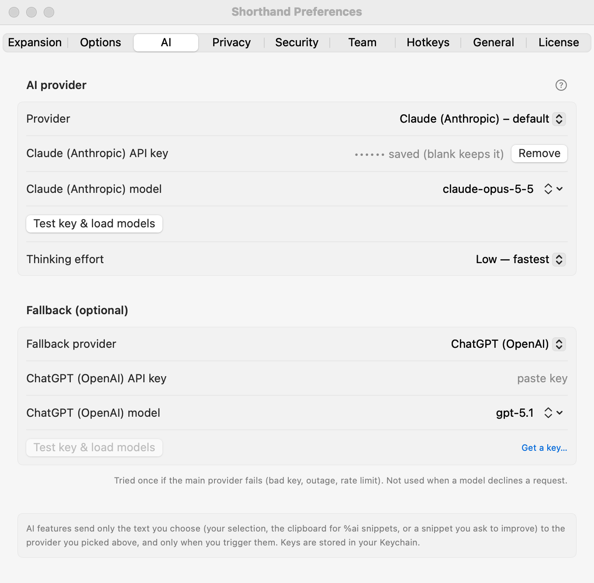

Setting Up AI
Shorthand’s AI features are optional and off until you add a key. You bring your own account with an AI provider; Shorthand talks to it directly.
Quick setup
- Open Settings: choose Shorthand ▸ Settings… (⌘,), or Preferences… from the Shorthand menu bar icon.
- Click the AI tab.
- Pick a Provider. Claude (Anthropic) is the default.
- Click the Get a … key… link, create a key on the provider’s website and copy it.
- Paste the key into the API key field.
- Click Test key & load models. A line starting with ✓ Key works with means you’re done.

Choosing a provider
Apple Intelligence (on this Mac) needs no key and no account, and nothing you send leaves your Mac. It needs macOS 26 or later on an Apple silicon Mac with Apple Intelligence turned on (System Settings ▸ Apple Intelligence & Siri). It’s fast and private, and best for short jobs such as fixing text, filling in fields, and short replies; it handles about 9,000 characters at a time, so long jobs and tricky ones (like converting another app’s codes) go better with a large cloud model. Choose it as your main provider, or as the fallback.
Pick one in the Provider menu. Each provider needs its own API key, made on its website:
| Provider (as shown in the menu) | Where to get a key |
|---|---|
| Claude (Anthropic) – default | console.anthropic.com/settings/keys |
| ChatGPT (OpenAI) | platform.openai.com/api-keys |
| Gemini (Google) | aistudio.google.com/apikey |
| OpenRouter (any model) | openrouter.ai/keys |
| Groq | console.groq.com/keys |
| Together AI | api.together.xyz/settings/api-keys |
| Mistral | console.mistral.ai/api-keys |
| DeepSeek | platform.deepseek.com/api_keys |
| Kimi (Moonshot) | platform.moonshot.ai/console/api-keys |
| Grok (xAI) | console.x.ai |
| Hugging Face (router) | huggingface.co/settings/tokens |
| Custom OpenAI-compatible (Ollama, LM Studio, …) | No key page: you run the server yourself. See below. |
Not sure? Keep the default, Claude. If you want one key for many different models, OpenRouter is a good choice.
API use is billed by the provider, separately from any chat subscription you may have.
Saving your key
- Paste the key into the API key field.
- Press Return (you’ll see Key saved), or just click Test key & load models, which saves it too.
Keys are stored in your Mac’s Keychain, never in Shorthand’s settings files. Once a key is saved, the field shows •••••• saved – blank keeps it. To replace it, paste a new one; to delete it, click Remove key.
Choosing a model
Test key & load models does two things:
- It asks the provider which models your key can use and loads that live list.
- It sends a tiny test message to the selected model. The result reads, for example, ✓ Key works with claude-opus-5-5 · 24 models available, or starts with ✗ and the reason.
To pick a model, click the small ⇕ button at the end of the model field and choose from the list. Until you’ve loaded the list, the menu says Click “Test key & load models” to list models.
Model not in the list? Type its id straight into the model field, for example a brand-new model or one your provider hides from its list. Shorthand uses whatever you type. The field starts with the provider’s suggested model; replace it with any model id.
Thinking effort
Choose Low — fastest (the default), Medium or High — most careful. Higher effort lets the model think longer before answering: better on tricky rewrites, but slower.
It is used by Claude and by OpenAI reasoning models. Other providers ignore it.
Fallback provider
A fallback is a second provider Shorthand can use when the first one has a problem.
- In the Fallback (optional) section, choose a Fallback provider.
- Enter its key and model in the rows that appear, and click Test key & load models.
- Used when the main provider fails: a rejected key, an outage, a rate limit, a network problem, or an empty reply.
- Not used when the model declines a request (a refusal). Shorthand shows the reason and stops; it never shops the same request around to another provider.
- It is tried once. If it also fails, you see both error messages.
- If the main provider has no key at all but the fallback does, Shorthand goes straight to the fallback.
Custom and local providers (Ollama, LM Studio)
Choose Custom OpenAI-compatible (Ollama, LM Studio, …) to use a model running on your own Mac, or any service that speaks the OpenAI chat-completions format.
- Start your local server (for example Ollama or LM Studio) and make sure a model is downloaded.
- In Base URL, enter the server’s address ending in
/v1. The default is Ollama’s:http://localhost:11434/v1. LM Studio’s server usually listens onhttp://localhost:1234/v1. - The key is optional; leave it empty for local servers that don’t need one.
- Click Test key & load models, then pick or type a model id (for example
llama3.2). A custom provider needs both a base URL and a model id before it can be used.
Base URL rule: https:// works with any address. Plain http:// is allowed only for this Mac: localhost, 127.0.0.1, or ::1. This keeps your key from ever traveling unencrypted. If the URL breaks the rule, an orange note appears under the field and the provider can’t be used.
Privacy
- Nothing is sent until you use an AI feature. Then only the text that feature needs is sent: your selection (AI Actions), the prompt of a
%aisnippet with any clipboard text or fill-in values it mentions, or the snippet you ask Suggest with AI to improve. - It goes straight from your Mac to the provider you chose, or to the fallback if the main one fails. There is no Shorthand server in between.
- What happens to it next is up to that provider’s terms. With a local model (Ollama, LM Studio), nothing leaves your Mac.
- Your typing in general is never sent to any AI. See Privacy, Blocklist & Permissions.
Keychain prompts
macOS may ask “Shorthand wants to use your confidential information stored in … in your keychain”. Click Always Allow. This mainly happens after Shorthand has been rebuilt or updated without a permanent signature (an ad-hoc build): macOS then treats it as a new app and asks once for each saved key.